17/11/2026
Right, recap; have implemented memory kernel computation, however its a 2x2 matrix; so what its terms represent isn’t exactly clear. Tried to analytically relate these terms to more intuitive quantities, however haven’t reached an end there.
I think it may be worth going back to the code; and actually plotting some things. Sure its unclear what exactly should be plot; but given its a 2x2 matrix, there’s a limited number of things to plot. Plotting all of these may help me understand the analytics at play.
As such, given:
\[ \begin{align} T_{k} &= \begin{bmatrix} a_{k} & b_{k} \\ c_{k} & d_{k} \end{bmatrix} \\ a_{k}&=1-c_{0}(t_{k})-\sum_{j=1}^{k}a_{j}+c_{0}(t_{k-j})(b_{j}-a_{j}) \\ b_{k}&=1-c_{0}(t_{k})-\sum_{j=1}^{k}a_{j}(1-c_{0}(t_{k-j}))+b_{j}c_{1}(t_{k-j}) \\ c_{k}&=c_{0}(t_{k})-\sum_{j=1}^{k}c_{j}+c_{0}(t_{k-j})(d_{j}-c_{j}) \\ d_{k}&=c_{1}(t_{k})-\sum_{j=1}^{k}c_{j}(1-c_{0}(t_{k-j}))+d_{j}c_{1}(t_{k-j}) \\ \end{align} \tag{1}\]
\[ v_{k}=a_{k}+c_{k}=1-\sum_{j=1}^{k}v_{j}(1-c_{0}(t_{k-j}))+w_{j}c_{0}(t_{k-j}) \tag{2}\]
\[ w_{k}=b_{k}+d_{k}=1+c_{1}(t_{k})-c_{0}(t_{k}) - \sum_{j=1}^{k}v_{j}(1-c_{0}(t_{k-j}))+w_{j}c_{1}(t_{k-j}) \tag{3}\]
from last week, there are 6 obvious things to plot; \(a,b,c,d\) and \(v,w\). It may also be worth defining some norm over the entire \(T\) and plotting that as well.
Recalling my quantum computing course notes, an operator norm may be defined as:
\[ ||A||=max(A\ket{\psi})=max(\lambda_{i}) \tag{4}\]
Where max(_{i}) is the largest eigenvalue of operator A. Quick search reveals this def to be the “spectral norm” (Weisstein n.d.); reading np docs it can be implemented using numpy.linalg.norm, however this is apparently slow according to (ali_m 2015); given hermitian operators (which this should be), so can speed it up.
Ok, have got a basic plot:
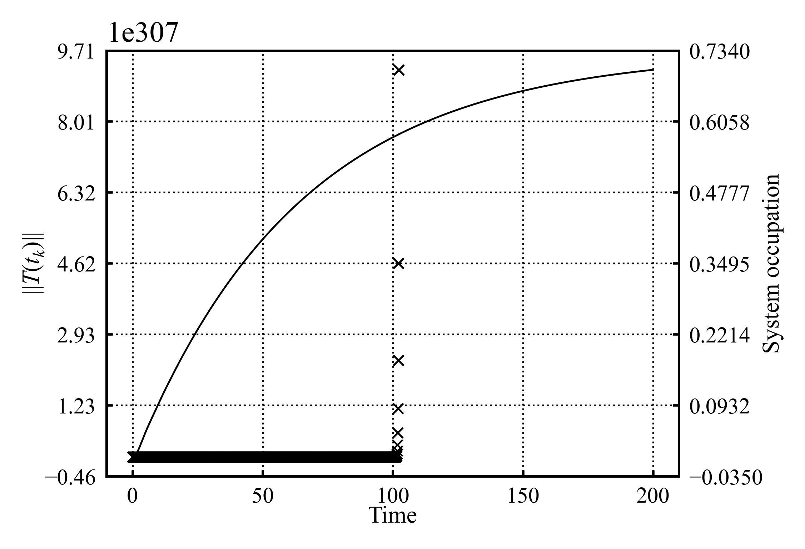
And this leads me to believe i’ve implemented something wrong. I sincerely doubt that the memory kernel diverges for a well behaved evolution. I flipped a sign in one of the computations; fixing that provides:
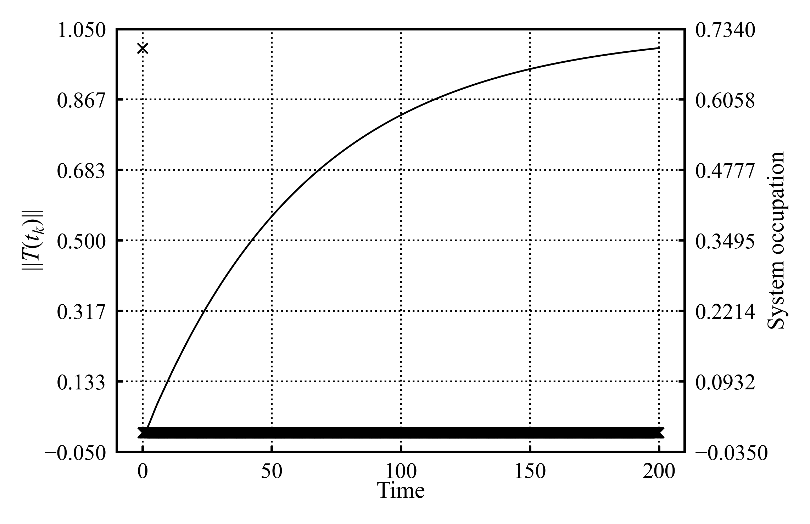
Which seems a lot more reasonable. Actually not, most of those values (save the first) are 0s… ok for some reason the summation term in Equation 5
\[ T_{k} = \Lambda_{k}-\sum_{j=1}^{k}T_{j}\Lambda_{k-j} \tag{5}\]
is exactly equaling to \(\Lambda_{k}\), causing it to cancel out exactly. Ok was indexing that summation wrong; have fixed… Odd behaviour, switching from the manual implementation of spectral norm to numpy’s built in helps, but still odd behaviour:
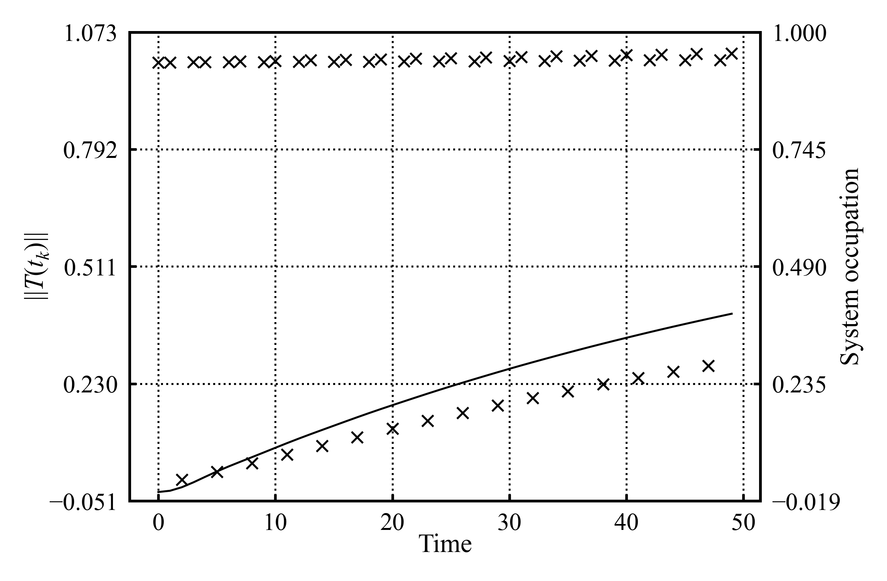
.With some discontinuous jumping between two general trends. Increasing the timestep produces:
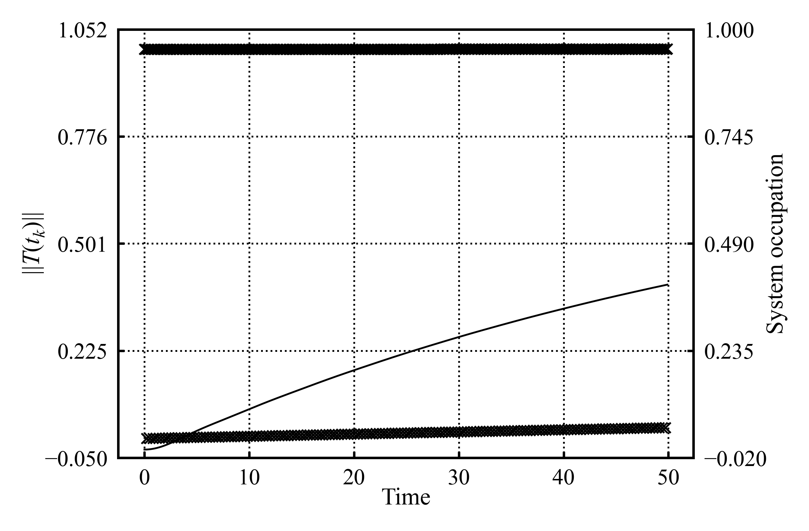
.Which seems to “converge” these two trends to more constant values. This apparent convergence is expected; as \(\delta t\to 0\), the transfer tensor should approach the memory kernel; this is somewhat illustrated by (Morillas-Rozas et al. 2026) fig 3. Given that ?@fig-normedKernelHigherTimeStep uses non markovian standard parameters, the kernel should go to 0 which it does for one of the trends, not the other. I wonder if i’m just not using the numpy function correctly… It seems i am… Numpy has some other matrix norms; gonna quickly try some of the others… The “frobenius norm” is similiarly discontinuous:
 .
.
As is the “nuclear norm”:
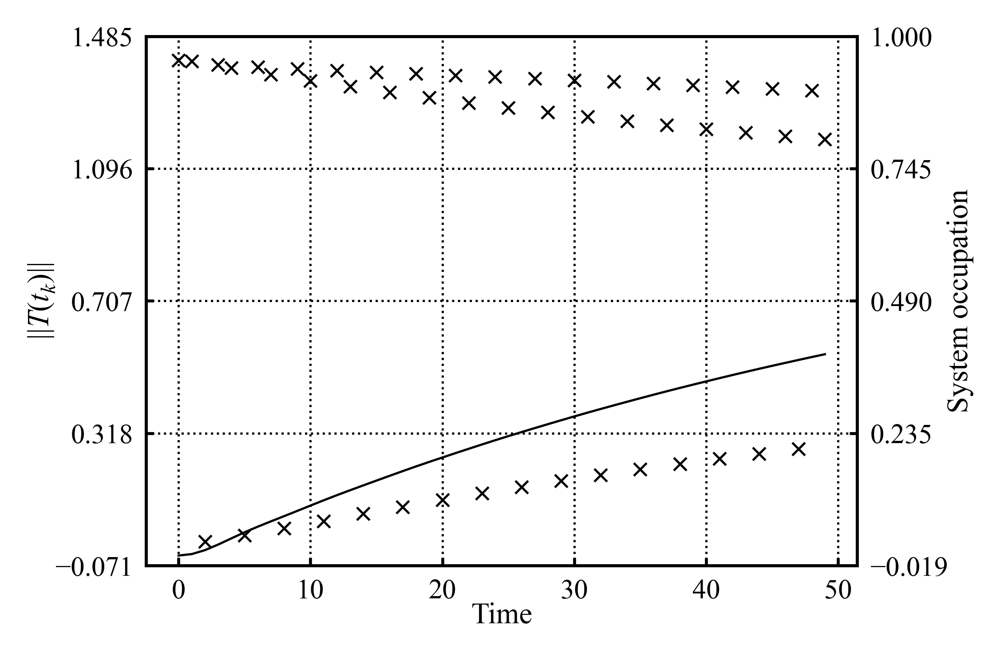
.hmmmmmmmm… It may be worth trying to figure out if there is an actual discontinuity in the tensor, or if it’s an artefact of the norm. A first step to doing so would be to plot the components of \(T\) and see if there’s any obvious discontinuity there.
A bit of a crude plot, however plotting the real components of \(T\) yields:
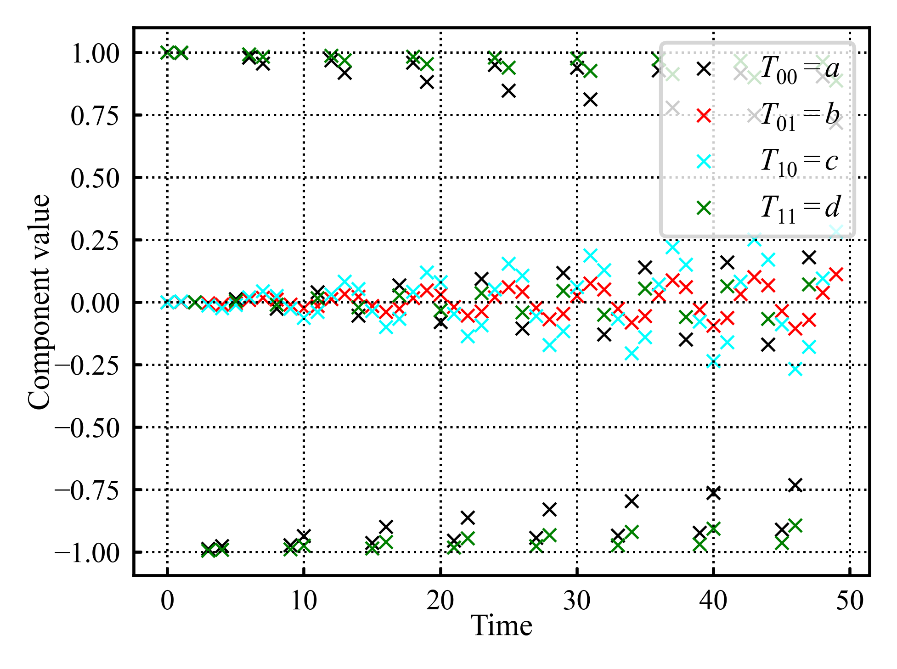
.Which also shows this discontinuity… This tensor is expressed in terms of the dynamic map, going to check its components as well:
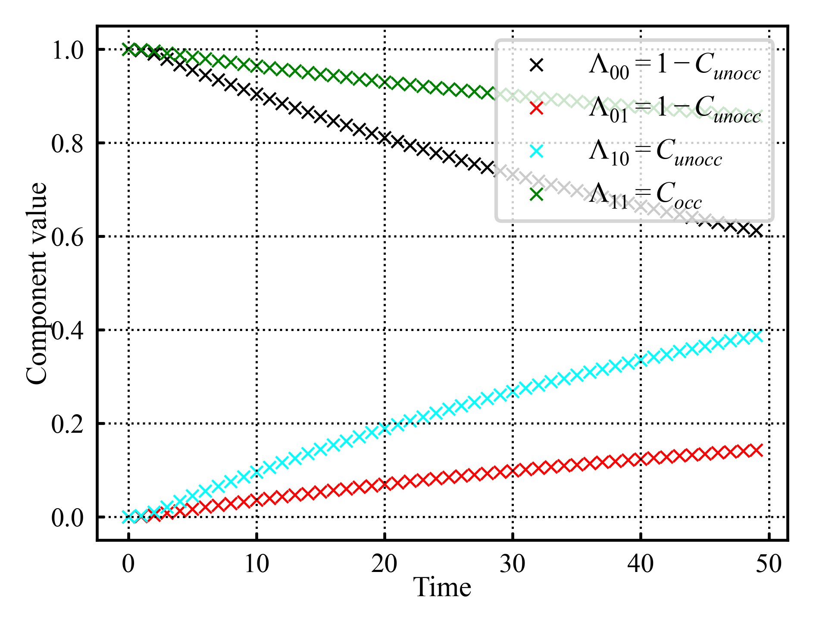
.So the dynamic map is continuous, but the memory kernel may not be… (i say may not because ?@fig-memoryKernelComponents only shows the real components of each term).
Increasing \(\delta t=1 \to 0.5\) doesn’t qualitatively change anything:
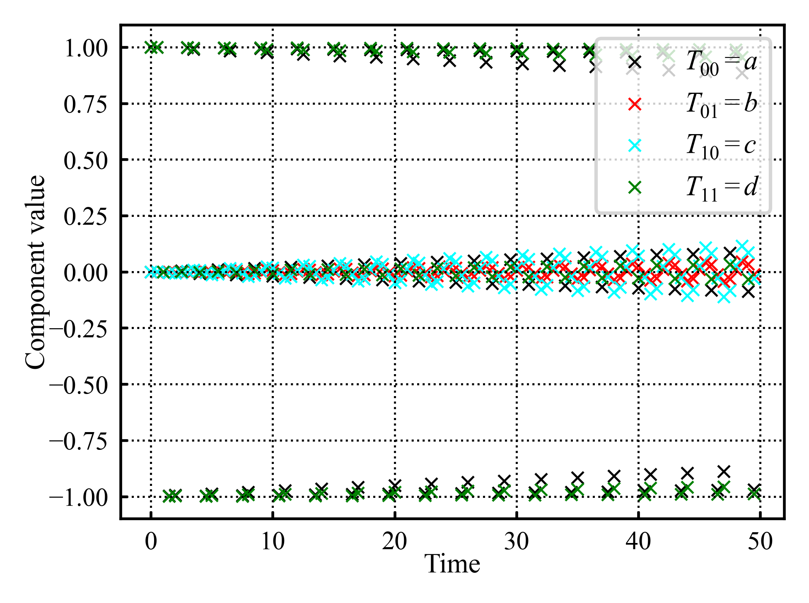
.Can check continuity of the memory kernel itself by examining \(||T_{k}-T_{k-1}||\); going to use spectral norm for this.
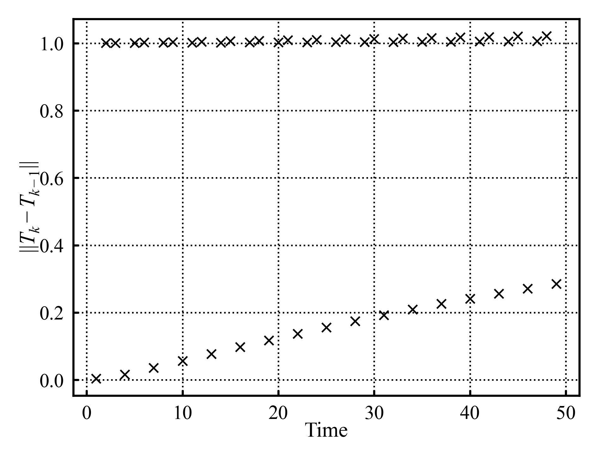
.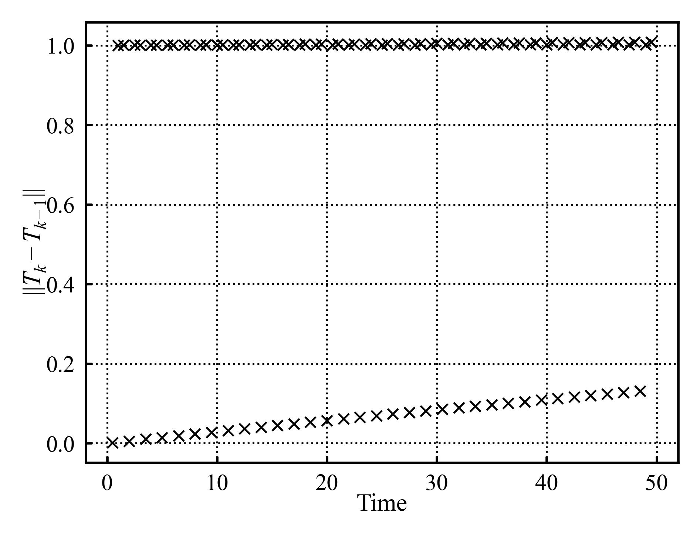
.Its interesting how the norm seems to jump between the “continuous” part and \(||T_{k}-T_{k-1}||=1\) for 2 points, then back to the “continuous” part. I wonder if (for some reason) some reflection or rotation transformation is being applied s.t \(AT_{k}=V_{k}\), \(AAT_{k}=W_{k}\), \(AAAT_{k}=T_{k}\), \(||T_{k}-V_{k}||=1\), \(||V_{k}-W_{k}||=1\)…
Copy/pasting the first few memory kernels from the code output yields:
\[ \begin{align} T_{0} &= \begin{bmatrix} 1 & 0 \\ 0 & 1 \end{bmatrix} \\ T_{1} &= \begin{bmatrix} 0.99724679 & 0.00106782 \\ 0.00275321 & 0.99893218 \end{bmatrix} \approx \begin{bmatrix} 1 & 0 \\ 0 & 1 \end{bmatrix} \\ T_{2} &= \begin{bmatrix} 0 & 0 \\ 0 & 0 \end{bmatrix} \\ T_{3} &= \begin{bmatrix} -0.98694813-3.23111680\cdot 10^{-19}i & -0.00504947+1.04708321\cdot 10^{-21}i \\ -0.01305187+3.23111680\cdot 10^{-19}i & -0.99495053-1.04708321\cdot 10^{-21}i \end{bmatrix} \approx -\begin{bmatrix} 1 & 0 \\ 0 & 1 \end{bmatrix}\\ T_{4} &= \begin{bmatrix} -0.97626925+8.64047521\cdot 10^{-19}i & -0.00913725+6.48035641e\cdot 10^{-19}i \\ -0.02373075-8.64047521\cdot 10^{-19}i & -0.99086275-6.48035641\cdot 10^{-19}i \end{bmatrix} \approx -\begin{bmatrix} 1 & 0 \\ 0 & 1 \end{bmatrix}\\ T_{5} &= \begin{bmatrix} 0.01239272+3.23038288\cdot 10^{-18}i & -0.00464539+1.51129964\cdot 10^{-18}i \\ -0.01239272-3.23038288\cdot 10^{-18}i & 0.00464539-1.51129964\cdot 10^{-18}i \end{bmatrix} \approx \begin{bmatrix} 0 & 0 \\ 0 & 0 \end{bmatrix}\\ T_{6} &= \begin{bmatrix} 0.97976237+1.61664863\cdot 10^{-18}i & 0.00806559+8.73035960\cdot 10^{-19}i \\ 0.02023763-1.61664863\cdot 10^{-18}i & 0.99193441-8.73035960\cdot 10^{-19}i \end{bmatrix} \approx\begin{bmatrix} 1 & 0 \\ 0 & 1 \end{bmatrix}\\ T_{7} &= \begin{bmatrix} 0.956307 -3.70285829\cdot 10^{-18}i & 0.01706489-9.36264110\cdot 10^{-19}i \\ 0.043693 +3.70285829\cdot 10^{-18}i & 0.98293511+9.36264110\cdot 10^{-19}i \end{bmatrix} \approx\begin{bmatrix} 1 & 0 \\ 0 & 1 \end{bmatrix}\\ T_{8} &= \begin{bmatrix} -0.02601805-5.96955427\cdot 10^{-18}i & 0.00995065-3.82443416\cdot 10^{-18}i \\ 0.02601805+5.96955427\cdot 10^{-18}i & -0.00995065+3.82443416\cdot 10^{-18}i \end{bmatrix} \approx\begin{bmatrix} 0 & 0 \\ 0 & 0 \end{bmatrix}\\ \end{align} \]
Which is interesting. It seems to be almost a \(T_{k}=T_{k-1}-T_{k-2}\) behaviour (with some additional wibbliness). It may have been another indexing problem…
For context, Equation 5 is 1-indexed, the code is 0 indexed. First attempt, summation was running \(j\in[0, k]\) which resulted in diverging behaviour, second attempt summation was running \(j\in[0, k-1]\) resulting in this discontinuous behaviour; trying \(j\in[1, k]\) yields:
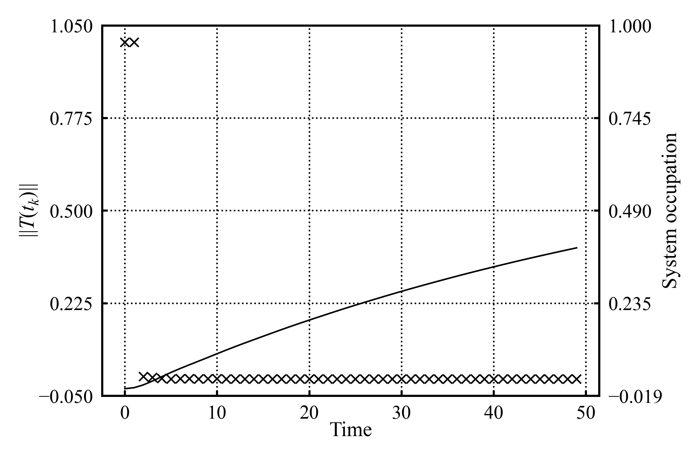
.which seems reasonable. Attempting this for a markovian evolution:
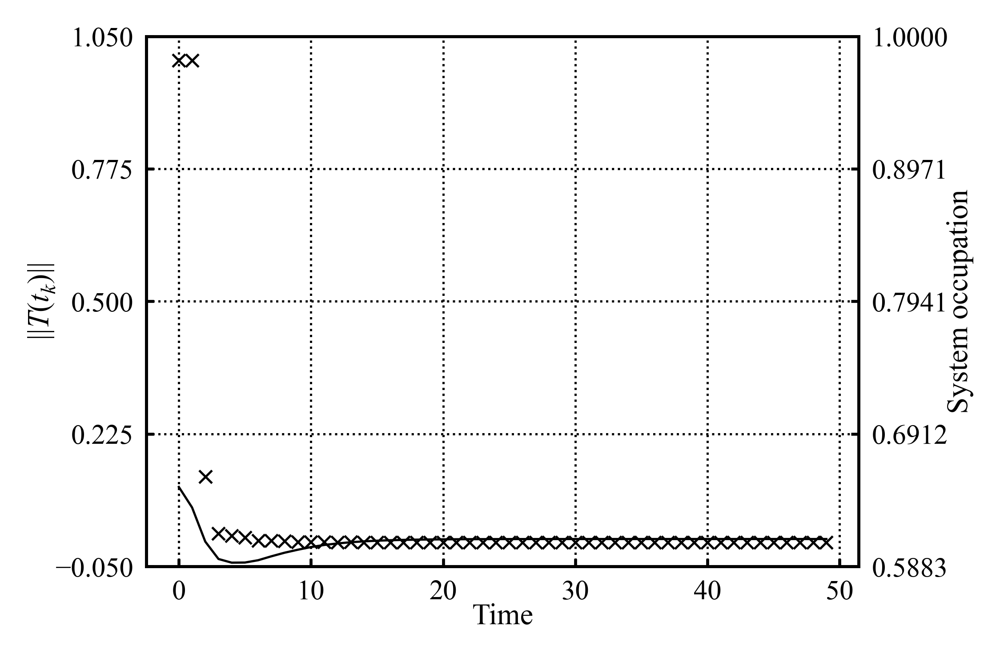
.hmmmm, less reasonable… May curtail the first two memory kernels; see what that produces?
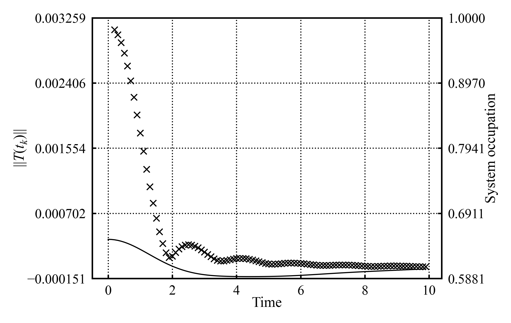
.now THAT looks more reasonable. Examining the components in a similar manner yields:
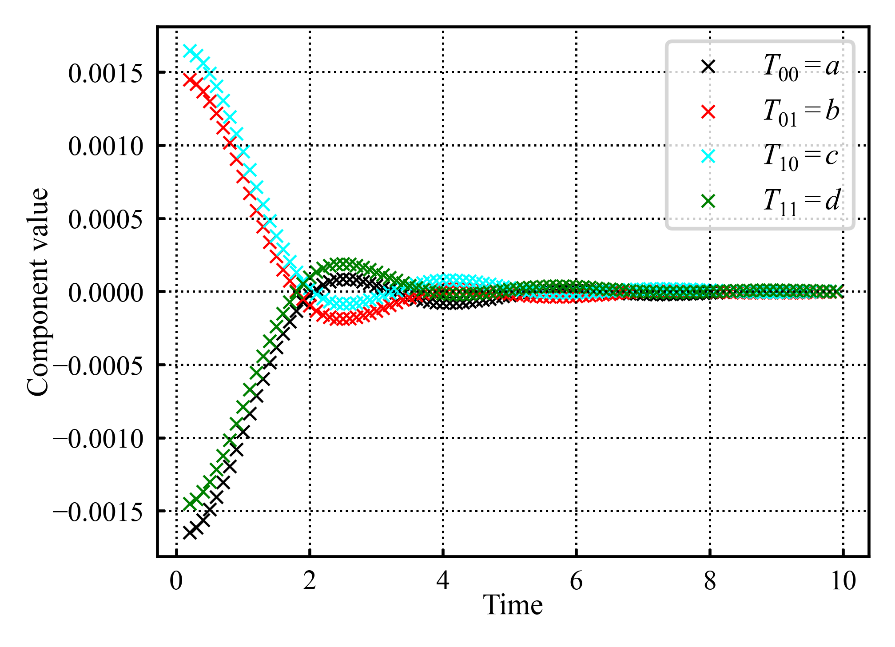
.Which illustrates a lot of structure. There does appear to be a symmetry between $a,c& and \(b,d\); so it seems that \(v=a+c\), \(w=b+d\) from last week may actually be useful to look at.
A few things to note:
- the memory kernel doesn’t depend on the initial occupation; these plots don’t need to show the system evolution necessarily
- it makes sense the first few kernels are nonsense, there’s no past evolution to speak of.
Going to put this down for today; have other things i need to do, but progress!
19/11/2026
Supervisor meeting went well, general discussion points:
- fit memory kernel to exp decay * sinusoidal
- fourrier transform data - can probably extract periodicity
- propagate system evo w/memeory kernel to compare to dynamic map as sanity check
- check markovian regime
- compare for smaller time steps
- examine first most important bath mode - compare to memory kernel; should be comparable?
- chain mapping may help with this - may also help with expanding system later
- the wierd wibbles of bath evolution!